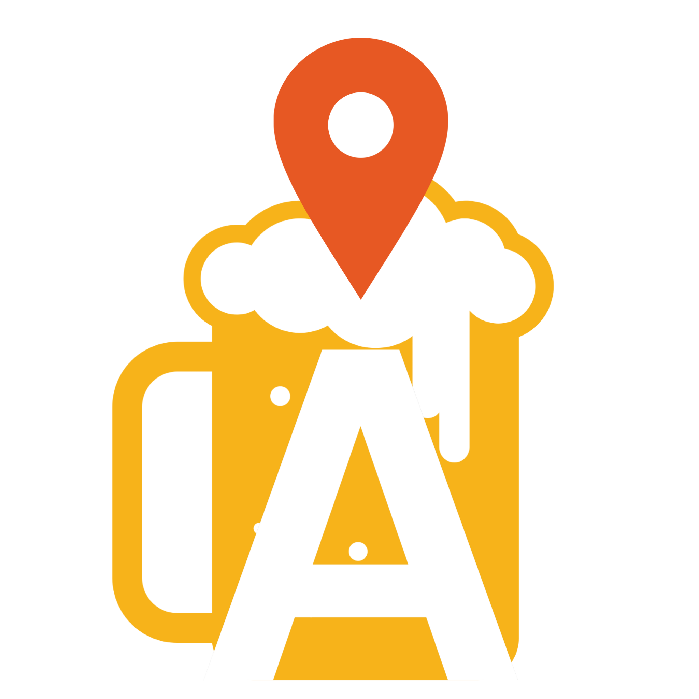

Ale Trail Guide

Welcome to Ale Trail Guide
What Type of Brewery would you like to search for?
Micro
Nano
Regional
Brew Pub
Large
Planning
Bar
Contract
Proprietor
Closed
Search
Micro - Most craft breweries. Ex. Samual Adams is still considered a micro brewery.
Nano - An extremely small brewery which typically only distributes locally.
Regional - A regional location of an expanded brewery. Ex. Sierra Nevada’s Asheville, NC location.
Brewpub - A beer-focused restaurant or restaurant/bar with a brewery on-premise.
Large - A very large brewery. Likely not for visitors. Ex. Miller-Coors.
Planning - A brewery in planning or not yet opened to the public.
Bar - A bar. No brewery equipment on premise.
Contract - A brewery that uses another brewery’s equipment.
Proprietor - Similar to contract brewing but refers more to a brewery incubator.
Closed - A location which has been closed.
Modal title
Modal body text goes here.